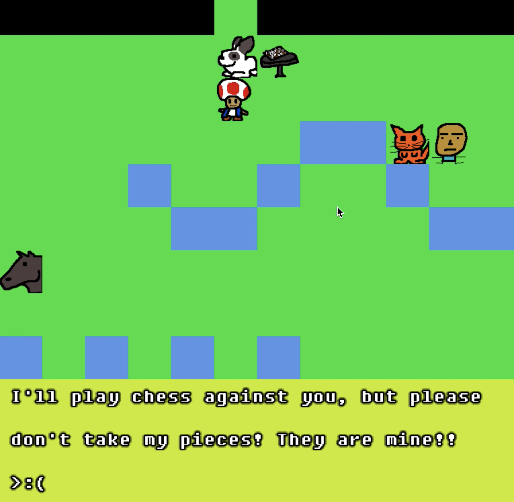

Chess RPG | |
|---|---|
|
The source code for this project can be found here.
This is a game I whipped up for my video game studies class back in December 2020. The class was about analyzing video games, not coding them (it counted for my literature requirement, actually), so this was made with the intention of demonstrating something critical and interesting. I made it from scratch in C, using the SDL2 library for displaying graphics and reading input. The game attempts to mimic Pokémon, but with chess replacing the battling. The player walks through a park, talking to NPCs who discuss chess and facing off against chess opponents. Here is a picture of me talking to one such opponent in the game:  I gave the opponents distinctive "chess personalities" that come out in their AI. For example, this opponent, who asks the player not to take their pieces, moves such that no pieces are in danger and considers nothing else. Here is a picture of a game against them several moves in, where they have moved their rook back and forth to avoid its capture, not caring about the impending checkmate on f7. The critical aim in making this game was to see how it would feel to play a game where the player has to absorb new information, but with characters that were connotationally "cold;" the chess pieces. In Pokemon, for example, the player absorbs information on the type system, the Pokemons' stats, et cetera, but I suspected that the fact that the Pokemon are cute characters makes learning this information more appealing. Of course, one difference here is that most information in this game is "meta" information about chess strategy and tactics. Some characters do explain the rules of the game, though, like castling and how the knight moves. |
|